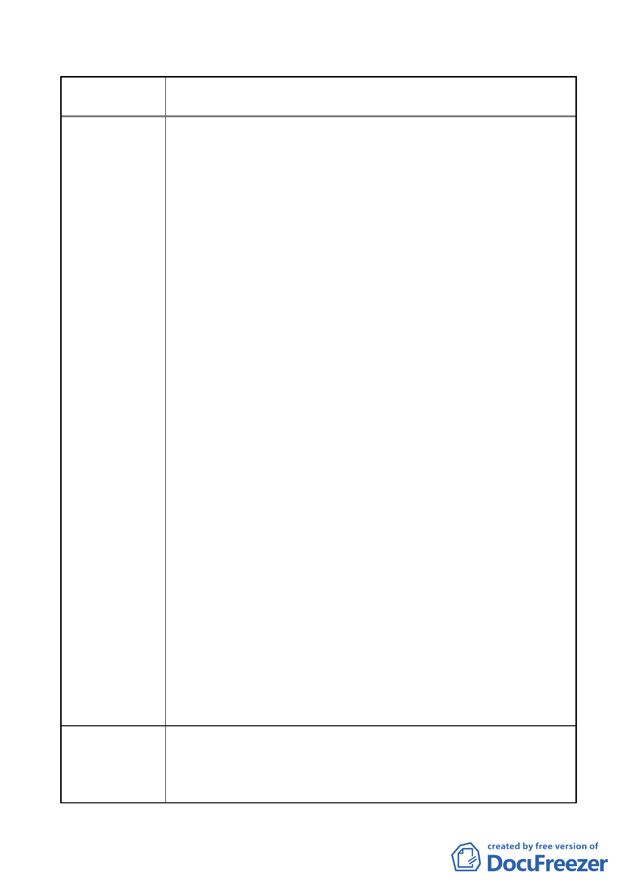

案名
市府回應說明
變更臺北市內湖區石潭段四小段 280、281、281-1 地號等三筆
土地國中、國小用地為體育場用地及道路用地主要計畫案
206 巷 48 號，係中央研究院院士、行政院院務顧問台北市政
府市政顧問）為主任委員，張永東先生（42-1 號，係殷實企
業家）為財務委員。
2.在該次會議中，本社區各住戶基於居住安寧權益之考量，共
同決議提出三項問題（參考附件一），推請鍾柏生先生（32
號，係中央研究院兼任研究員）列席台北市都市計劃委員會
於 101 年 8 月 22 日（星期三）舉行之專案小組會議，代表本
社區發言。
3.有關貴府所擬之計劃案，本社區之補充意見如下：
（1）少子化現象已成為趨勢，如果將原有國中、國小用地變更
規劃為如「大安森林公園」之土地利用型態，供鄰近住戶
及本市居民做為休閒運動公園，本社區敬表贊同。
（2）本基地面積僅有 5.12 公頃，硬要將 20 面網球場建於基地
之內，因過分擁擠，勢必對鄰近居民帶來外部性的不經濟
效果（例如：嗓音、燈光照明、交通壅塞等問題，尤其對
206 巷（編定為住 2）鄰近居民之居住安寧影響最大。
（3）8 月 22 日貴府專案小組會議也有一些委員特別提出質疑：
是否一定要設置 20 面網球場？其中部分練習球場可否移
到他處設置？尤有進者，交通動線之規劃（由 206 巷入
口，210 巷出口）有很多盲點。在捷運民生汐止線動工仍
遙遙無期之下，也有委員建議必須把交通動線外部化之不
良後果內部化，應該在本基地內部自建交通網絡系統，如
此才不會對 206 巷及 210 巷等兩巷帶交通擁擠現象，對
於委員之前述建議，本社區深表贊同。
（4）政府施政一定要以民意為依歸，尤其施政必須與受影響最
大之社區居民從事面對面溝通。本計劃案影響前述兩巷最
為重大，有關問卷調查或公聽會或相關會議等，本社區未
被通知與參與，貴府顯有避重就輕、捨近求遠之嫌？若因
施政溝通不良造成民意反彈，甚至引發居民抗爭情勢，恐
非貴府所樂見。深盼貴府轉知所屬單位，未來於舉辦相關
會議時，務請將開會資料（包括計劃內容）事先通知本社
區，俾便派代表參加發言。
1. 本計畫預定於無設校需求之寶湖國中、小預定地，興建臺北
市網球中心，目的在於妥善利用公共設施資源，並提供國人
專業運動休閒場地，亦可增加未來申辦相關國際運動賽事之
設施場館水準，相較於大安森林公園，其功能與性質並不相
- 34 -